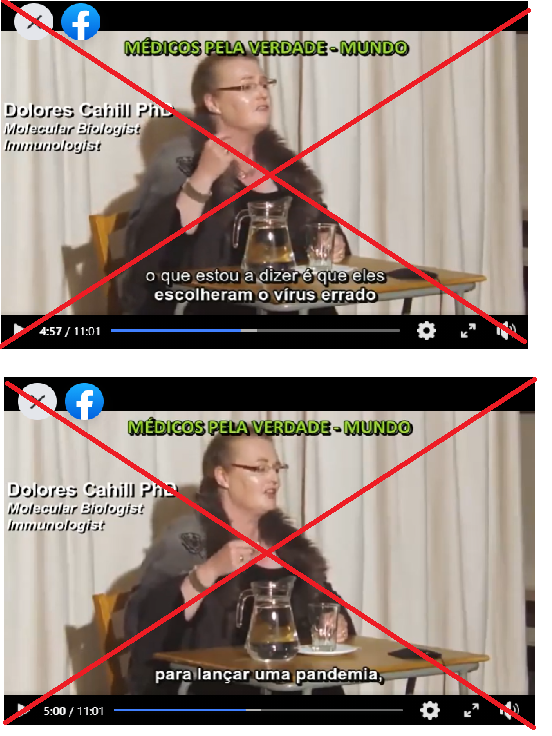
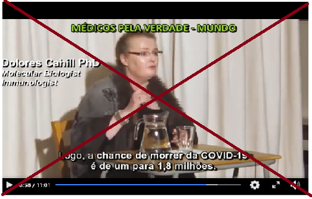

Negacionistas¶
Entrevista Fernando Nobre e Gustavo Carona¶
Ver em baixo duas entrevistas fundamentais para perceber que sobre o covid so' contam as opinioes: - dos especialistas (virulogistas) - e dos intensivistas (UCIs) que ficam com a batata quente no fim.
A primeira entrevista 'e a Fernando Nobre, medico cirurgiao e fundador da AMI, que diz uma quantidade incrivel de asneiras seguidas. como qualquer pessoa normal, tinha uma percepcao muito boa sobre esta pessoa; esta entrevista mostrou-me a realidade. https://www.youtube.com/watch?v=F8PfJMIuLnk
A seguinda entrevista foi na semana imediatmente a seguir a Gustavo Carona, médico intensivista que trabalha na UCI de matosinhos. Este sim esta' na linha da frente onde a batata quente vai parar, e ao longo dos 90m desmonta completamente todas as asneiras da grossa da entervista anterior. https://www.youtube.com/watch?v=G1Lq7Z6xT2A https://rr.sapo.pt/2020/11/11/pais/m/especial/214351/
update: conversa com bruno nogueira: https://www.facebook.com/watch/?ref=saved&v=841195703394686
Meta analises de ivermectina e hidroxicloroquina¶
Analise do poligrafo brazil: https://piaui.folha.uol.com.br/lupa/2021/02/23/anuncio-medicos-pela-vida-covid-19/ sobre as meta analises do site https://c19study.com/, https://c19ivermectin.com/ e similares:
"o suposto estudo é uma meta-análise, ou seja, uma análise feita com base em outros trabalhos existentes. (...) O problema é que, nesse caso, a análise é feita sem metodologia e rigor científico."
"A eficácia de um tratamento só pode ser realmente comprovada com estudos científicos que usam uma metodologia rigorosa:
- randomização
- duplo-cego
- publicados em uma revista científica + peer-review"
Problemas:
- Os p-valor sao simplemente multiplicados entre si = LIXO ESTATISCO
- Misturam pre-prints com erros graves e que nunca vao ser publicados, com estudos "a serio" publicados.
- So' o estudo publicados em revistas cientificas e' que contam, por terem sido verificados pelos pares (=especialistas).
- Todos os estudos teem todos pesos iguais. Estudos com qualidade zero, ou negativa teem o mesmo peso 1.
manifesto falso: https://piaui.folha.uol.com.br/lupa/wp-content/uploads/2021/02/manifesto-medicos-pela-vida.pdf
Reportagem e Debate TVI sobre negacionistas¶
Excelente reportagem e debate da TVI sobre os "medicos pela verdade".
No grupo ha' psicologos, dentistas e enfoermeiros. Mas nao tem nenhum medico de saude publica, epidemiologita ou virulogista.
Problemas semelhantes nos "jornalistas pela verdade". Quem da' a cara nao e' jornalista.
Reportagem: https://tviplayer.iol.pt/video/5fad9d950cf203abc5b0c31e
O debate comeca aos 1h18m deste video: https://tviplayer.iol.pt/video/5fadcf1b0cf2c785555011b9
Update 2021-02-11:\ mais quatro médicos pela verdade condenados: https://tviplayer.iol.pt/video/60258c5d0cf245b9a97a76b6

Fim dos medicos pela verdade¶
Uma excelente noticia!
Observador: https://observador.pt/2021/02/09/movimento-medicos-pela-verdade-suspende-redes-sociais-e-anuncia-interregno/
Reportagem com Rastreadores¶
"Ninguem está a tossir. Se daqui a um mês eu tiver covid, por amor de deus nao me liguem para a linha saude24, porque vos põem em isolamento DESNECESSARIAMENTE e adicionam lixo ao sistema"
Excelente reportagem com os rastreadores da covid sobre o lixo da SNS24. Fica a ideia que o governo está a poupar tostões aqui, para perder milhões na perda da economia.
Sumario:
- 00:50 Festas privadas com centenas de pessoas só podem ser interrompidas pela GNR com mandato judicial
- 01:35 Naquela unidade sao 40 rastreadores, deviam ser 100.
- 02:20 Ha' casos que os infectados tiveram >80 contactos nos últimos 14 dias (!). Todos têm que ser contactados um a um. Cada telefonema demora 20 minutos.
- 03:15 As pessoas mentem os rastreadores
- 04:06 O traceCovid tem imenso "lixo" lá colocado pela linha saude24. Lixo = contactos de baixo risco e que atrasam os realmente importantes.
- 04:30 Os contactos devem simplesmente ficar à espera. Mas como ficam assustados, ligam SEM RAZÃO para a saude24 e recebem instrução de isolamento (sem necessidade!)
- 04:53 Muitas pessoas ficam em isolamento sem necessidade, porque nao foram contactos de risco. Exemplo: alguém que contactou um doente
- 05:10 Ninguém está a tossir. Se daqui a um mês eu tiver covid, por amor de deus nao me liguem para a linha saude24, porque vos poeem em isolamento DESNECESARIAMENTE e adicionam lixo ao sistema"
- 05:50 Sistema de informática "em baixo"
- 06:26 delegados de saúde têm todo o tipo de pedidos sem qualquer interesse (pombas a sujar, cães a ladrar)
- 07:33 Restaurantes escolas, lares, lojas, restaurantes, ginásios, feiras, vigilância 'a população, juntas médicas e assuntos nao-covid
- 07:57 Pessoas à beira do limite - contadas na primeira pessoa

Entrevistas ao chefe dos UCI do Porto¶
Duas entrevistas ao chefe dos Cuidados Intensivos do Sao Joao (Porto). 'E este o medico que fica com a batata quente com o aumento exponencial dos casos intensivos que lhe batem 'a porta, sem parar. Quaisquer que sejam os recursos, nunca chegariam para um aumento exponencial de casos; um aumento de 30% 'e irrisorio se for necessario um aumento de 1000% (por exemplo). Tanto Covid como nao-covid. Porque ninguem serio vai negar UCI aos covid - e esses enchem tudo, e os nao-covid vao chegando tarde. Tudo isto 'e evitavel. Todos sabem o que fazer. O timeline 'e ate' o pais estar 70% vacinado.
RTP3 grande entrevista: https://www.rtp.pt/play/p6646/e500951/grande-entrevista
Expresso entrevista: https://www.facebook.com/groups/205024390569013/permalink/361827324888718/
Acordao da Relacao fala em 97% falsos positivos¶
"Ora, da leitura do artigo, concluem as juízas que “a probabilidade de a pessoa receber um falso positivo é de 97% ou superior”."
O assunto do momento 'e o acordao da Relacao sobre a DRS dos Acores.
Eu fui ler o dito acordao e os 2x artigos cientificos citados. Posso afirmar SEM QUALQUER DUVIDA esta conclusao esta' completamente errada, e' completamente irresponsavel, e demonstra ignorancia atroz de assuntos cientificos.
Artigos Cientificos sao destinados a Cientistas dessa area especifica. Nao sao destinados ao publico em geral.
O resultado esta' 'a vista. Conceitos de sensibilidade estatistica e especificidade estatistica sao extremamente complicados de perceber, medir e dominar. https://pestrela.github.io/covid/#jarg%C3%A3o-estat%C3%ADstico-sensibilidade-e-especificidade
Isto sim 'e informacao correcta sobre este assunto: “Os testes de PCR têm uma especificidade e sensibilidade superiores a 95%. Isto é, na esmagadora maioria dos casos detectam o vírus que provoca a covid-19”.
https://www.publico.pt/2020/11/17/sociedade/noticia/juizas-fazem-leitura-errada-artigos-cientificos-poe-causa-fiabilidade-testes-covid19-1939616 https://www.publico.pt/2020/11/17/ciencia/opiniao/testes-diagnostico-covid19-capricho-irresponsabilidade-tribunal-relacao-1939606
Extra:
- post: https://www.facebook.com/scimed.evidencia/posts/1010122222802944
- numeros oficiais: https://www.worldometers.info/coronavirus/country/portugal/
- Acordao: http://www.dgsi.pt/jtrl.nsf/33182fc732316039802565fa00497eec/79d6ba338dcbe5e28025861f003e7b30
Acordao da Relacao - detalhes¶
Existem muitos conceitos legais que ja' sao dificeis de entender para Engenheiros, e ainda pior para Cientistas. - "sem margem de dúvida razoável" - "interpretacao da lei" - "suspeita razoavel"
Que, sem surpresa, 'e um dos termos usados na decisao: "Face à actual evidência científica, esse teste mostra-se, só por si, incapaz de determinar, sem margem de dúvida razoável, que (...)" http://www.dgsi.pt/jtrl.nsf/33182fc732316039802565fa00497eec/79d6ba338dcbe5e28025861f003e7b30
decisao essa em que os juizes reconhecem que nao sao especialistas: "e neste campo, o julgador terá de se socorrer do saber dos peritos na matéria"
Mas depois usam este excerto de uma CARTA ao editor (publicado sem revisao pelos pares): "Isto significa que se uma pessoa tem um teste PCR positivo a um limiar de ciclos de 35 ou superior (como acontece na maioria dos laboratórios do EUA e da Europa), as probabilidades de uma pessoa estar infectada é menor do que 3%. A probabilidade de a pessoa receber um falso positivo é de 97% ou superior”."
Este excerto foi posterioremente APAGADO do original. So' este facto ja' invalida a argumentacao: https://academic.oup.com/cid/advance-article/doi/10.1093/cid/ciaa1491/5912603
O resultado 'e termos esta perola num acordao, assumidamente em traducao livre: " "A probabilidade de a pessoa receber um falso positivo é de 97% ou superior" "
Aguardo com expectativa a jurisprudencia que sair deste acordao.
Artigo sobre negacionistas no noticias magazine¶
do artigo:
Acreditam em factos alternativos mirabolantes e em cabalas mundiais. E descobrem essas “verdades” em fóruns online, grupos de Facebook ou canais de YouTube que não são controlados por aqueles que os querem enganar. Quem são estes negacionistas e conspiracionistas? E como falar com eles?
“É importante lembrar que a negação da ciência não tem que ver com a argumentação racional. Se fosse, fornecer evidências seria suficiente para mudar a opinião dos negacionistas e conspiracionistas”
“O negacionista conhece os ‘factos’, mas simplesmente recusa-se a acreditar neles. Porquê? Porque interferem com outras coisas em que deseja acreditar, entram em conflito com a sua identidade, ou porque não confia nas pessoas que lhes fornecem esses factos.” Como falar com um negacionista?
“Saber ou não saber os factos científicos é o menos relevante, o mais importante é explicar às pessoas como é que a ciência funciona, como avança, o que é o consenso científico”
https://www.noticiasmagazine.pt/2020/o-extraordinario-mundo-dos-negacionistas/historias/253566/
Analise de um video de negacionistas¶
Este 'e um exemplo tipico de negacionistas: https://www.facebook.com/joao.coelho.5201/posts/10219735143302856
A primeira coisa a fazer deve ser sempre procurar se este video ja' apareceu num "poligrafo" / "fact checking", o que 'e o caso: https://www.google.com/search?q=dolores+cahill+fact+checking
Se isto nao chegasse, entao as principais alegacoes sao: a) "eles" (os governos?) lancam virus todas os invernos e que "escolheram um errado" (um forte demais?). b) Os numeros ate' fevereiro teem uma letalidade marginal
Procurando nao se encontra nenhuma prova destas alegacoes https://people.ucd.ie/dolores.cahill https://www.irishtimes.com/news/ireland/irish-news/ucd-professor-asked-to-resign-from-eu-committee-over-covid-19-claims-1.4277698 https://www.thejournal.ie/dolores-cahill-coronavirus-video-facebook-twitter-5148488-Aug2020/
Segundo, nada disto bate certo com a realidade dos hospitais cheiois, nem com a alegacao que "usaram o virus errado".
 
Comentarios Raquel Varela e Carlos Antunes¶
Raquel varela: "só olhando para o valor avançado por Carlos Antunes é um erro de 340%." https://www.facebook.com/raquelvarelahistoriadora/posts/264864001671243
Carlos antunes: "Sobre uma suposta publicação de uma Raquel Varela... que visou o meu nome:" https://www.facebook.com/carlos.antunes.908/posts/10158862801999014
Entrevista a carlos antunes no poligrafo: https://sicnoticias.pt/programas/poligrafo/2021-02-09-Covid-19.-Fecho-das-escolas-foi-determinante-para-queda-abrupta-de-casos